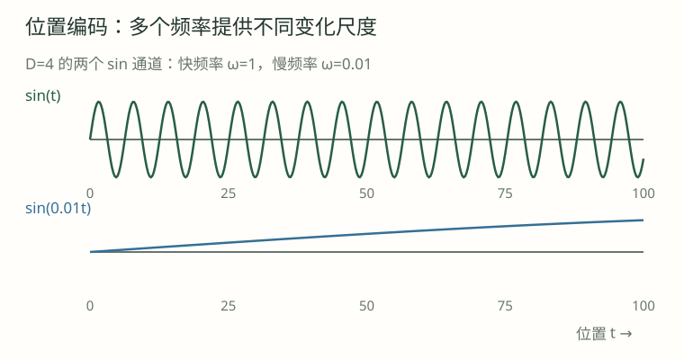

01 · 无位置注意力的排列等变，是输出完全不变吗？
展开逐步解析
不是。输入被 P 重排时，输出也按 P 重排。它对内容仍然敏感，只是没有额外固定位置标识。
同样的词，换一个顺序，模型怎样察觉？
“小猫追小狗”和“小狗追小猫”含相同词语，却表达不同关系。位置机制让模型利用顺序与距离。
无位置机制、无因果遮罩的全可见 Attention 具有排列等变性：重排输入，输出按同样方式重排。
无位置、全可见注意力：Attention(PX) = P·Attention(X)
P 表示对序列位置的置换，参数与内容变换保持相同。因果遮罩已提供前后可见性结构；位置编码进一步提供坐标和距离信号。
绝对位置方案将D维位置向量 p_t 与 token 向量相加：x_t=E[token_t]+p_t。
token_vectors = embedding(input_ids) # [B,T,D]
positions = torch.arange(input_ids.shape[1])
x = token_vectors + position_embedding(positions)[None, :, :]p_t 可来自可训练表或固定公式。表有长度边界，扩表后的新位置仍需学习。
位置向量描述坐标，不属于某个词。相加可以改变范数，RoPE 则采用旋转。
正弦编码按维度成对：频率 ω_j=10000^(-2j/D)，位置t对应 sin(tω_j)、cos(tω_j)。

PE(t,2j) = sin(t·ω_j)
PE(t,2j+1) = cos(t·ω_j)
D=4 时：ω₀=1，ω₁=0.01| 位置 | 四维位置向量 |
|---|---|
| 0 | [0, 1, 0, 1] |
| 1 | [0.841471, 0.540302, 0.00999983, 0.999950] |
d = 4
inv = 10000 ** (-torch.arange(0, d, 2, dtype=torch.float64) / d)
angles = torch.arange(2, dtype=torch.float64)[:, None] * inv
pe = torch.stack((angles.sin(), angles.cos()), dim=-1).flatten(-2)多个频率共同表示位置；能计算训练范围外坐标，不等于模型已学会使用它。
相对位置方法让注意力显式依赖距离，例如给分数加入 i−j 的偏置。
score(i,j) = q_i·k_j / √d_h + b(i-j)
例如教学偏置 b(Δ) = -0.1·|Δ|，更远位置受到更大负偏置。RoPE 采用另一条路径：先旋转 Q/K，使内积出现位置差，下一课推导。
区分方法时，重点看位置信号进入哪里、分数依赖什么。
位置机制提供坐标，遮罩决定可见性，缓存保存历史状态，三者作用不同。
padding 应被遮住；新增 token 的位置接在已有前缀后，而非每次归零。
实验展示内容与固定位置配对，以及 sin/cos 值；排列等变测试使用无因果遮罩的条件。
比较位置方案还需核对短/长任务、缓存兼容和训练设置。
绝对方案在输入结合位置；相对方案在匹配中体现距离。RoPE 将位置旋转转化为相对内积。
先作答，再展开解析。
不是。输入被 P 重排时，输出也按 P 重排。它对内容仍然敏感，只是没有额外固定位置标识。
因果遮罩规定了按位置排序的可见结构。重排内容但不相应变换遮罩，会改变允许的连接，不满足原推导前提。
两对的角度都是 0，sin(0)=0、cos(0)=1，所以是 [0,1,0,1]。
不意味着。公式可计算与训练分布、注意力分布和任务能力是不同问题，还要考虑模型配置、资源与评估。
遮罩解决谁能看谁；位置提供坐标或距离；缓存复用历史计算。三者有关联，但不能互相替代。
这个信号本身不能区分位置，因为每处相同。后续可能利用其他结构，但不能把这种常量称为已提供不同的绝对坐标。